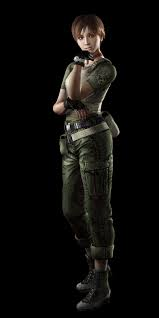

Historia
Resident Evil 0, también nombrado Resident Evil Ø de forma estilizada, cuyo título original en Japón es Biohazard Ø (バイオハザードØ Baiohazādo Ø?), o también conocido como Resident Evil Zero, es un videojuego del género survival horror que fue desarrollado y publicado por Capcom para la Nintendo GameCube el 12 de noviembre de 2002 inicialmente como un título exclusivo de la consola y años más tarde siendo lanzado para la Nintendo Wii en 2008. También existe una versión remasterizada llamada Resident Evil 0 HD Remaster lanzada el 2016 para las consolas y ordenadores de séptima generación.
La historia del juego es una precuela del primer Resident Evil, y narra las aventuras de Rebecca Chambers, un día antes del incidente en las instalaciones del laboratorio Arklay. En un principio, Resident Evil 0 se encontraba en desarrollo para la Nintendo 64, a raíz del éxito en el sistema de la conversión tardía (lanzada en octubre de 1999) de Resident Evil 2, con mejora poligonal en los modelos de personajes, fondos en alta resolución y herramientas especiales para la inclusión de los vídeos que habían aparecido en la versión de PlayStation. El equipo de desarrollo Angel Studios consiguió mejorar el juego original de PlayStation (excepto en el sonido y la calidad de los vídeos, los cuales resultaron empobrecidos muy ligeramente) con un cartucho de 64MB (512 megabits), es decir, menos de un 10% de lo que ocupaba en el sistema original. Se supone que la idea de rentabilizar las herramientas en las que Capcom había invertido fue otro de los puntos fuertes a tener en cuenta para el desarrollo de Resident Evil 0, incluso se llegaron a mostrar vídeos e imágenes del inicio del juego en N64 en Estados Unidos y se pretendía lanzarlo hacia el año 2000. No obstante, al igual que otros títulos para la consola de 64 bits, el proyecto original se pasó a GameCube, con mayores capacidades técnicas, consiguiendo un nivel gráfico y sonoro fuera del alcance de su predecesora. El juego, programado por Flagship, equipo de Capcom del que Nintendo cuenta con participaciones, se lanzó finalmente a finales de 2002. Aunque Capcom se quejó en el momento de las ventas de Resident Evil y Resident Evil 0 en Nintendo GameCube, lo cierto es que ambos juegos han superado el millón y medio de unidades vendidas, a diferencia de las entregas aparecidas en la misma generación en consolas como Sega Dreamcast o Sony PlayStation 2.